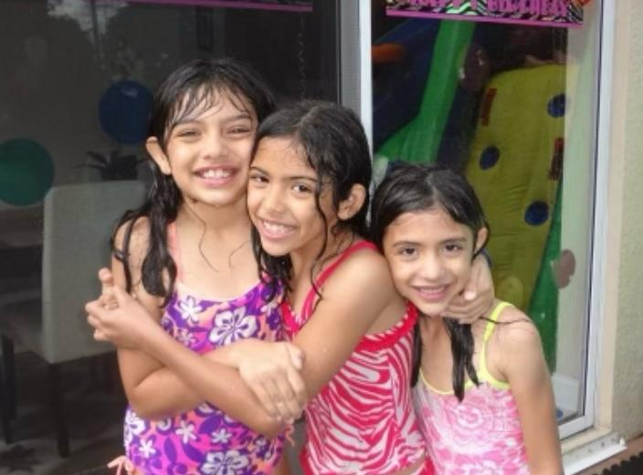
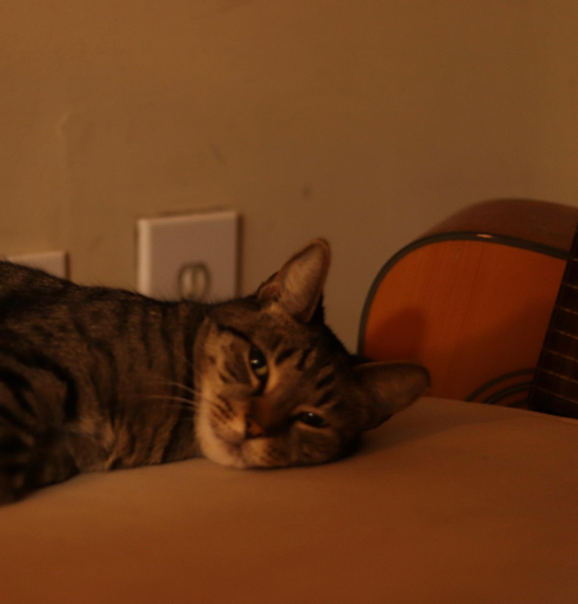
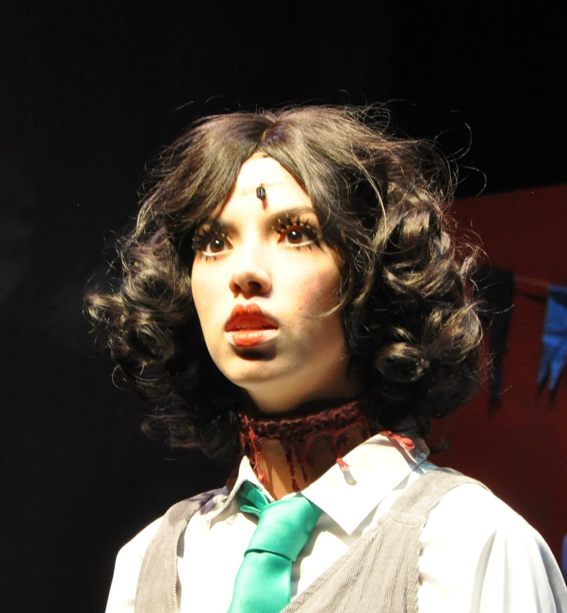

✳
Understanding people
Growing up with two incredible, unique sisters has taught me that everyone has
their own personality, perspective, and way of seeing the world.
Those everyday experiences have shaped my curiosity about human
behavior and how people connect, communicate, and work together.

♡
Leading with empathy
As a cat mom and lifelong animal lover, I've learned that care takes
patience, consistency, and a little creativity—especially when
teaching my cat tricks. I believe everyone deserves understanding
and grace, because life happens, and we all need a little compassion
sometimes.

↗
Cross-functional collaboration
More than a decade in acting and martial arts has taught me the
importance of lifelong learning, skill development, discipline,
adaptability, and calculated risk-taking. Behind the scenes,
collaborating with cast, crew, directors, and design teams showed
me how different people and moving parts come together to bring
an idea to life.

⌘
Learning continuously
Traveling has taught me to approach new cultures with curiosity
and respect. Before visiting a country, I research its customs and
learn basic phrases in the local language. These small steps help
me appreciate different perspectives, navigate unfamiliar
environments thoughtfully, and embrace my role as a global citizen.